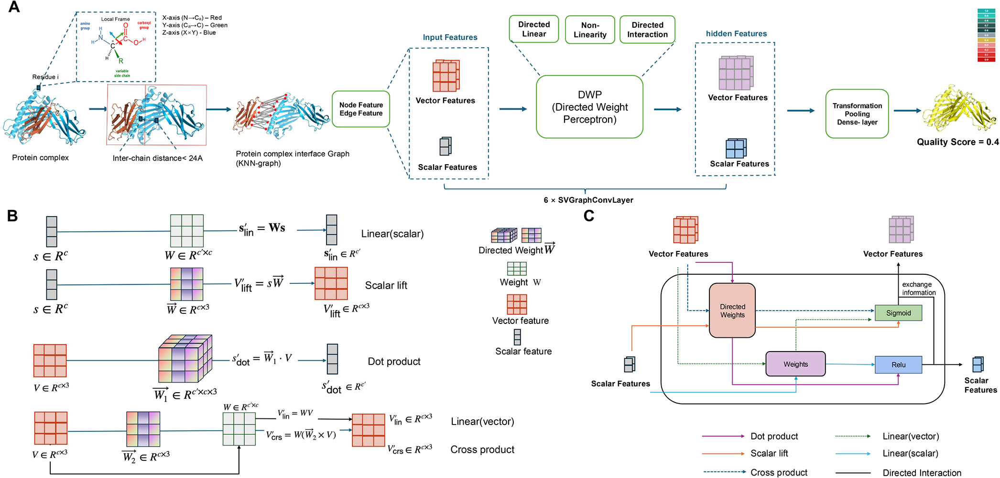
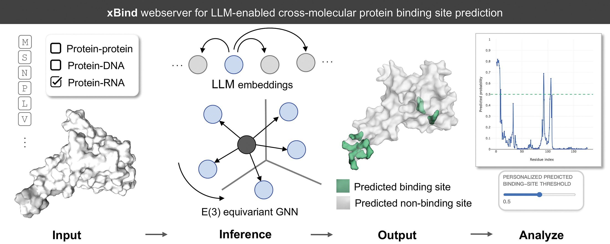
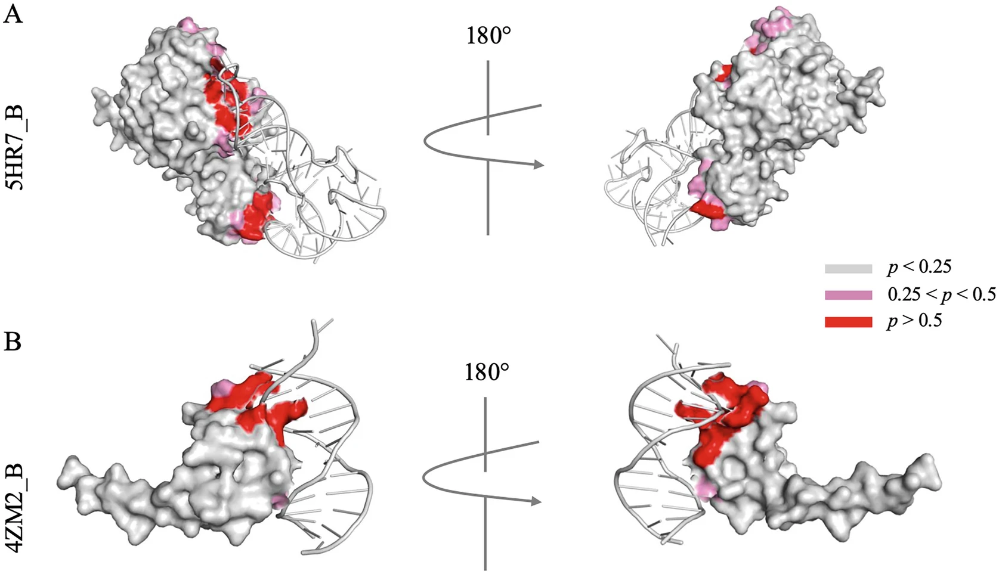

|
Xinyu Wang (王馨宇) /ʃin-yu wɑŋ/ I am a third-year PhD student in the Department of Computer Science at Virginia Tech, advised by Prof. Debswapna Bhattacharya. My research focuses on computational biology, particularly macromolecular modeling and geometric deep learning for 3D molecular structures. I earned my bachelor’s degree in Software Engineering from the University of Electronic Science and Technology of China. During my undergraduate studies, I interned with the AI for Science group at Zhejiang Lab in Hangzhou, China. Email / Github / LinkedIn / Google Scholar / |

|
Publications

ORIGAMI: Orientation-Aware Graph Neural Network for Assessing
Multimeric Interfaces of Protein Complex Structures
Xinyu Wang,
Debswapna Bhattacharya*
Journal of Chemical Information and Modeling
Paper /
Preprint /
GitHub

xBind: an integrated webserver for large language model-enabled
cross-molecular protein binding site prediction
Xinyu Wang†,
Xingyue Feng†,
Sumit Tarafder,
Debswapna Bhattacharya*
Nucleic Acids Research
Paper /
Website

Advances in Language-Model-Informed Protein–Nucleic Acid
Binding Site Prediction
Sumit Tarafder,
Xinyu Wang,
Rahmatullah Roche,
Debswapna Bhattacharya*
Methods in Molecular Biology
Paper
† Equal contribution. * Corresponding author.
News
- [2026/04/09]Congrats to my advisor on the NIH award and feature in Virginia Tech News!
- [2026/05/05]My first author paper xBind has been published in Nucleic Acids Research! Check out our website
- [2026/06/03]My first author paper ORIGAMI is now available on bioRxiv!
- [2026/07/12]I will be attending ISMB 2026 in Washington, DC, from July 12–16 to present our work, ORIGAMI.
- [2026/07/13]My first author paper ORIGAMI has been published in Journal of Chemical Information and Modeling!
Misc
- I enjoy playing tennis and doing reformer Pilates, and I also like trying new sports.
- I seize every chance I get to travel, especially to islands.
- I have a lilac golden shaded cat named Fun.
Service
- Reviewer for:ISMB2025,2026,Communication Chemistry,Bioinformatics Advances